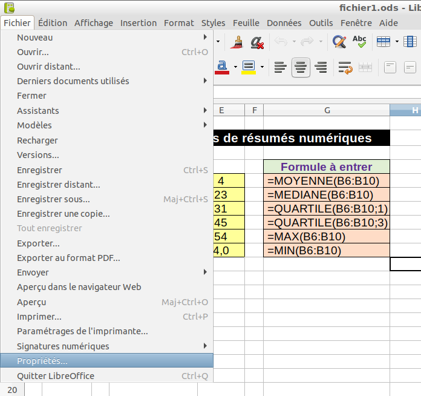
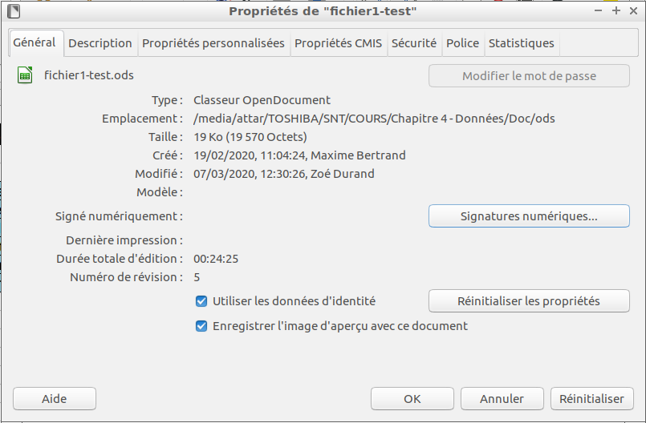
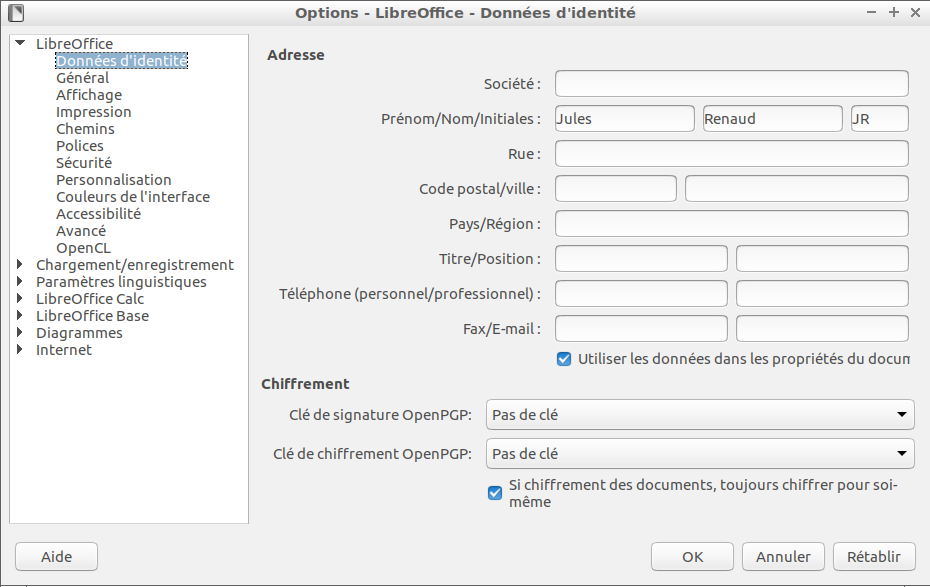

Une métadonnée est littéralement une donnée sur une donnée.
Plus précisément, c'est un ensemble structuré d'informations décrivant une ressource quelconque.
Les métadonnées sont en général constituées de mots-clés ou de texte libre. Ces informations peuvent être évidentes
(l'auteur, la date de publication, l'éditeur d'un livre), ou plus complexes et moins aisément définies:
les avis d'un collectif de lecture d'un article, par exemple, nécessitent une structure de métadonnées
évoluée capable d'annoter des portions de l'article, et cela, de façon multiple.
Les métadonnées sont particulièrement importantes pour les ressources visuelles qui, sans elles,
peuvent demeurer pratiquement inexploitables et impossibles à retrouver.
Les utilisateurs dépendent en effet des informations ajoutées aux images ou vidéos pour effectuer
des recherches pertinentes et précises. Les métadonnées aident alors les utilisateurs à découvrir
l'existence de ressources et la nature de ce qu'ils recherchent.
Les informations ajoutées à une ressource servent aussi à évaluer la ressource,
à porter un jugement sur celle-ci, et à la comparer à d'autres ressources.
Pour trouver les métadonnées d'un fichier CSV, il faut sélectionner le fichier CSV avec un clic gauche,
puis faire un clic droit et choisir Propriétés.
Pour trouver les métadonnées d'un fichier ODS avec Libre Office, il faut cliquer
sur l'onglet Fichier puis choisir Propriétés....

Dans la fenêtre qui s'affiche, on retrouve les métadonnées du fichier.

dans libre Office, on peut modifier les données d'identités en cliquant sur l'onglet
Outils puis en choisissant Options....
La fenêtre suivante s'affiche et dans les cases de la deuxième ligne à droite, on peut modifier le prénom et le nom.

On peut ensuite modifier les métadonnées du fichier en cliquant sur l'onglet
Fichier puis choisir Propriétés... puis cliquer sur Réinitialiser les propriétés.
Ainsi on change les métadonnées concernant la création du fichier.